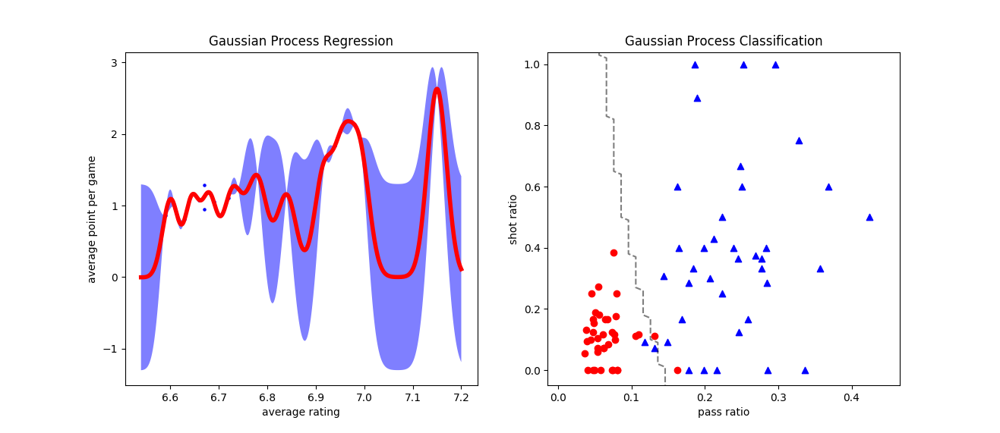
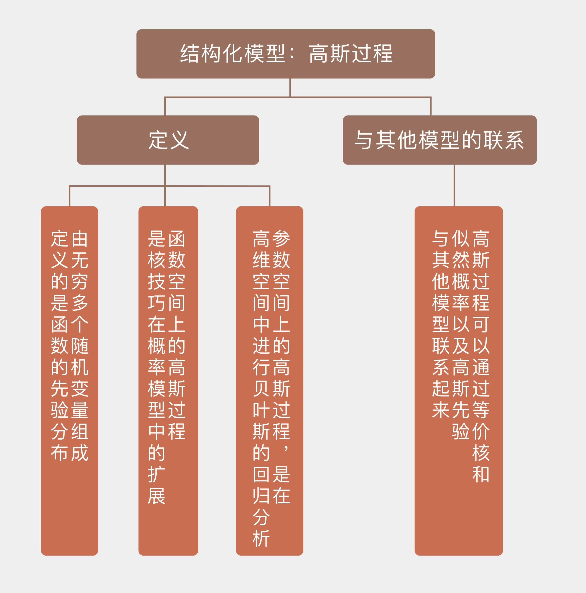

- 00 开篇词 打通修炼机器学习的任督二脉.md.html
- 01 频率视角下的机器学习.md.html
- 02 贝叶斯视角下的机器学习.md.html
- 03 学什么与怎么学.md.html
- 04 计算学习理论.md.html
- 05 模型的分类方式.md.html
- 06 模型的设计准则.md.html
- 07 模型的验证方法.md.html
- 08 模型的评估指标.md.html
- 09 实验设计.md.html
- 10 特征预处理.md.html
- 11 基础线性回归：一元与多元.md.html
- 12 正则化处理：收缩方法与边际化.md.html
- 13 线性降维：主成分的使用.md.html
- 14 非线性降维：流形学习.md.html
- 15 从回归到分类：联系函数与降维.md.html
- 16 建模非正态分布：广义线性模型.md.html
- 17 几何角度看分类：支持向量机.md.html
- 18 从全局到局部：核技巧.md.html
- 19 非参数化的局部模型：K近邻.md.html
- 20 基于距离的学习：聚类与度量学习.md.html
- 21 基函数扩展：属性的非线性化.md.html
- 22 自适应的基函数：神经网络.md.html
- 23 层次化的神经网络：深度学习.md.html
- 24 深度编解码：表示学习.md.html
- 25 基于特征的区域划分：树模型.md.html
- 26 集成化处理：Boosting与Bagging.md.html
- 27 万能模型：梯度提升与随机森林.md.html
- 28 最简单的概率图：朴素贝叶斯.md.html
- 29 有向图模型：贝叶斯网络.md.html
- 30 无向图模型：马尔可夫随机场.md.html
- 31 建模连续分布：高斯网络.md.html
- 32 从有限到无限：高斯过程.md.html
- 33 序列化建模：隐马尔可夫模型.md.html
- 34 连续序列化模型：线性动态系统.md.html
- 35 精确推断：变量消除及其拓展.md.html
- 36 确定近似推断：变分贝叶斯.md.html
- 37 随机近似推断：MCMC.md.html
- 38 完备数据下的参数学习：有向图与无向图.md.html
- 39 隐变量下的参数学习：EM方法与混合模型.md.html
- 40 结构学习：基于约束与基于评分.md.html
- 如何成为机器学习工程师？.md.html
- 总结课 机器学习的模型体系.md.html
- 总结课 贝叶斯学习的模型体系.md.html
- 结课 终有一天，你将为今天的付出骄傲.md.html
- 捐赠
32 从有限到无限：高斯过程
上一讲中我基于高斯分布介绍了建模连续型分布的高斯网络，其中所用到的多元高斯分布是一元高斯分布的扩展与推广。但在多元高斯分布中，变量的数目依然是有限的。如果像傅里叶变换（Fourier transform）那样，将无数个服从高斯概率的随机变量叠加到一起，这个在向量空间上形成的高斯分布就变成了函数空间上的高斯过程。
在概率论和统计学中，高斯过程（Gaussian process）是由出现在连续域上的无穷多个随机变量所组成的随机过程，不管连续域是时间还是空间，在上面定义的无穷维向量都可以看成是个函数（function）。高斯过程的高斯性（Gaussianity）指的是这无穷多个随机变量联合起来共同服从无穷维高斯分布，如果从中取出一部分变量，这些变量的边际分布也是高斯形式的。
不妨假设\(y({\\bf x})\)是个高斯过程。从空间尺度上看，如果在定义域中任取出一些点\({\\bf x}_1, {\\bf x}_2, \\cdots, {\\bf x}_N\)，那么这些点的联合分布就是多元的高斯分布。更重要的是，这样的性质对于定义域上的任何子集都成立，也就是不管如何取点、取多少点，这些随机变量的高斯性都能够一致地保持。从时间尺度上看，即使每次都抽取相同的点，随机过程的特性依然决定了样本每次独立的实现都会有所差异，但是在统计意义上，同一个自变量在多次抽取中得到的结果也是满足高斯分布的。
从数据生成的角度看，高斯过程还可以通过线性回归更加直观地理解。给定线性关系\(y = {\\bf w}^T {\\bf x}\)之后，对于每一个可能出现的权值向量\(\\bf w\)，都会有一条直线和它对应。所有\(\\bf w\)所对应的直线就会布满整个二维空间，而线性回归的任务就是找到那条和训练数据匹配度最高的那条直线。找到最优的直线意味着确定后验意义下最优的线性系数\(\\bf w\)，因此这个过程归根结底还是个参数化的过程。
如果要将上面的参数化过程过渡为完全的非参数化过程，就要摆脱对于参数\(\\bf w\)的依赖，最直接的方法是不定义\(\\bf w\)的先验，而是直接定义在函数空间上的输出\(y({\\bf x})\)的先验，也就是给出\(y({\\bf x})\)取不同形式的概率。这样一来，直接对函数建模的非参数模型就摆脱了参数模型的局限性，从而具备了更强大的拟合能力。而函数建模最简单的模型就是给连续的\(y({\\bf x})\)赋予高斯型的先验分布，得到的就是高斯过程。
在高斯过程中，每个可能的\(y({\\bf x})\)都是从高斯过程中抽取的一个样本。有限维度的高斯分布可以用均值向量和协方差矩阵这两个数字特征完全地刻画。而在无穷维的高斯过程中，这两者都变成了函数的形式。均值函数取决于训练数据\(\\bf X\)，它体现了样本出现的整体位置，而这个整体位置通常被设置为0。这样处理的原因在于和均值代表的绝对位置相比，表示不同数据点之间关系的协方差矩阵才是高斯过程的关键所在。
要理解协方差函数在高斯过程中的作用，首先要明确高斯过程的一个主要特点，那就是它建模的对象不是自变量\(\\bf x\)和因变量\(y\)之间的关系，而是不同的因变量\(y\)和\(y’\)之间的关系，正是这种思想决定了高斯过程的非参数特性。因变量之间的关系正是通过协方差函数体现，假定训练数据集是\(({\\bf X}, {\\bf y})\)，线性关系中的权重系数为\(\\bf w\)，那么输出的协方差函数就可以表示成
\[ {\\rm Cov}({\\bf y}) = {\\rm E}\[{\\bf y}{\\bf y}^T\] = {\\bf X}{\\rm E}\[{\\bf w}{\\bf w}^T\]{\\bf X}^T = \\dfrac{\\bf K}{\\alpha} \]
其中\(\\bf K\)被称为格拉姆矩阵（Gram matrix），其元素为\(K_{ij} = K({\\bf x}_i, {\\bf x}_j) = ({\\bf x}_i)^T {\\bf x}_j\)，这里的\(\\alpha\)是参数\(\\bf w\)所服从的高斯分布方差的倒数。这表示未知函数\(f(\\cdot)\)在\({\\bf x}_i\)和\({\\bf x}_j\)两点上的函数值服从二元高斯分布，其均值可以不失通用性地视为0，协方差矩阵则是上面求出的\({\\rm Cov}({\\bf y})\)中对应行列所形成的\(2 \\times 2\)方阵。
在这个表达式中，如果引入基函数的扩展来定义函数的先验，用函数\(\\phi (\\cdot)\)对输入的自变量做一个特征映射，那协方差函数的元素就变成了
\[ K_{ij} = \\phi({\\bf x}_i)^T \\phi({\\bf x}_j) \]
显然，这时的协方差函数已经具有了核函数的形式。如果你一时没有想起核函数为何物，那就复习一下前面支持向量机的内容。当\(K_{ij}\)取作径向基函数的形式\(\\exp (-| {\\bf x}_i - {\\bf x}_j | ^ 2 / 2)\)时，它就有了一个新的名字——平方指数（squared exponential）。
高斯过程其实就是核技巧在概率模型中的扩展，它将输出的协方差表示成输入的函数，再通过协方差来描述数据点之间的关系。在预测新样本时，高斯过程给出的不是对预测结果的点估计，而是完整的概率分布，这是一般的频率主义方法不能比的。
前面对高斯过程的理解都是从函数空间（function space）的角度出发的，换个方向的话，高斯过程也可以从参数空间（weight space）的角度来认识，这种理解方式是将高斯过程应用到线性回归的拟合之中，也被称为高斯过程回归（Gaussian process regression）。这部分内容实际上就是将上面的分析调转方向，通过定义特征映射将数据在高维空间中表示出来，再在高维空间上应用贝叶斯的回归分析。
高斯过程回归的数学细节较为繁冗，在这里就不做展开了，感兴趣的话你可以参考卡尔·拉斯姆森（Carl Edward Rasmussen）和克里斯托弗·威廉姆斯（Christopher KI Wiliams）的著作《机器学习中的高斯过程》（Gaussian Process for Machine Learning）。
其结论是用高斯过程计算出的预测分布（predictive distribution）也是一个高斯分布，它的均值是后验意义下的最优估计，方差则表示了估计结果的可信范围。这两个参数都和高斯过程的协方差函数，也就是核函数有关。使用不同的核函数，得到的估计结果也不会相同。
高斯过程之所以选择高斯分布做先验，是因为它符合之前介绍过的最大熵原理。当随机变量的协方差矩阵给定时，高斯分布的不确定性是最大的，这符合机器学习不做出多余假设的思想。另一方面，高斯分布良好的数学特性也让它适用于贝叶斯主义的方法。对高斯分布进行边际化处理，得到的结果依然是高斯分布，这对于涉及大量积分计算的贝叶斯方法无疑是个福音。
作为一类非参数的局部化模型，高斯过程和其他局部化的模型有什么区别和联系呢？不妨在这里对它们做个比较。
核回归（kernel regression）就是一种局部化回归模型，它利用的是核函数的平滑作用，用核函数对未知数据点附近的已知数据点的输出结果进行加权，再将加权的结果作为未知数据点的输出。这相当于将输入空间划分成不同的局部区域，在每个局部上拟合一个常数\(\\theta_0\)作为输出。
在核回归的基础上深入一步就是局部加权回归。局部加权回归（locally weighted regression）在每个局部上拟合的目标不是常数，而是一阶的线性模型\(\\theta_0 + \\theta_1 x\)。
本质上讲，这些局部化的回归模型就是套上了核函数外衣的\(k\)近邻方法，其中的核函数并没有统计特性上的意义，只是作为加权系数出现，所以被称为平滑核（smoothing kernel）。平滑核必须满足的是归一化的条件，也就是所有权重系数的积分等于1。相比之下，来源于协方差矩阵的核函数完全满足正定的条件，是根红苗正的Mercer核。当然，根据高斯过程的核函数可以计算出对应的平滑系数，计算出来的结果被称为等价核（equivalent kernel）。
既然说到核函数，就不能不提它最经典的应用——支持向量机。利用数学推导可以得出，在处理二分类问题时，支持向量机和高斯过程的损失函数具有相似的形式，其区别在于前者使用的是合页损失函数，后者使用的是似然概率的负对数。如果能够将合页损失等价为某种形式的似然概率，那么这两种方法就是等效的。可遗憾的是，这样的似然概率并不存在。
需要说明的是，将高斯过程应用于二分类问题时，高斯分布的特性反倒成为了运算中的掣肘。常用的处理方法是对高斯过程进行拉普拉斯近似（Laplace approximation），具体做法是将求解出来的预测分布的对数进行泰勒展开（Taylor expansion），将二阶项以上的高阶项全部去掉。由于后验概率的方差通常较小，其形状是狭窄的尖峰形式，因此这种近似并不会造成太大的误差。
最后一个用来和高斯过程进行比较的模型是大名鼎鼎的神经网络。通用逼近定理证明了具有单个隐藏层的神经网络可以拟合任何非线性的函数，拉德福德·尼尔（Radford Neal）则在他的著作《神经网络的贝叶斯学习》（Bayesian Learning for Neural Networks）中进一步证明了单隐层的神经网络会收敛于所有参数都服从高斯先验的高斯过程，换言之，两者可以相互取代。
但并不是所有人都认同这种观点，《信息论、推理与学习算法》（Information Theory, Inference and Learning Algorithm）的作者大卫·麦凯（David JC MacKay）就表示，神经网络的作用在于发现数据中潜在的特征与模式，而高斯过程只是简单的函数平滑。如果两者真的等效，那岂不是意味着我们都高估了神经网络吗？这种现象被麦凯称为“连孩子带洗澡水一起倒丢了”。
可是在十多年后的今天再回首，麦凯所言似乎一点儿毛病都没有。
在Scikit-learn中，高斯过程被定义在gaussian_process模块，模块中的类一部分用来实现回归或者分类功能，另一部分则定义了常用的核函数。将高斯过程应用在回归数据集和线性不可分的分类数据集上，结果如下图所示，这里使用的核函数是最常见的高斯核。
在回归问题中，高斯过程回归器GaussianProcessRegressor拟合出的结果就是利用高斯函数对原函数进行插值拟合，其中红色曲线是结果分布的均值，灰色阴影表示95%置信区间；在分类问题中，高斯过程分类器GaussianProcessClassifier计算出的则既可以直接输出类别，体现为图中的决策边界，也可以输出样本归属于类别的概率。当然，如果调整核函数的形式和参数，得到的结果也会不同。

高斯过程的回归和分类结果
今天我和你分享了高斯过程的基本原理，包含以下四个要点：
高斯过程由无穷多个随机变量组成，定义的是函数的先验分布；
函数空间上的高斯过程是核技巧在概率模型中的应用，通过定义因变量之间的相关性计算输出；
参数空间上的高斯过程是在高维空间中进行贝叶斯的回归分析；
高斯过程可以通过等价核、似然概率和高斯先验与其他模型联系起来。
在高斯过程中，一般的惯例是将均值函数设置为0。那么如果均值函数是非零的函数，它对高斯过程的结果又会产生什么影响呢？
你可以查阅相关资料，并在这里分享你的见解。

© 2019 - 2023 Liangliang Lee. Powered by gin and hexo-theme-book.